품질경영기사 (2020-06-06 기출문제)
1과목: 실험계획법
1. 라틴방격법에 관한 설명으로 맞는 것은?
- 라틴방격법에서 각 요인의 수준수는 동일해야 한다.
- 3요인 실험법의 횟수와 라틴방격법의 실험횟수는 같다.
- 4×4라틴방격법에는 오직 1개의 표준 라틴방격이 존재한다.
- 라틴방격법에서 수준수를 k라 하면, 총 실험횟수는 k3이다.
(정답률: 76%)

2. 모수모형에서 완전랜덤실험계획(completely randomized design)을 이용하여 정해진 4개의 실험조건에서 각각 5회씩 반복 실험했을 때, 이 측정치를 분석하기 위한 다음의 내용 중 맞는 것을 모두 고른 것은? (단, I=1, 2, 3, 4, j=1, 2, 3, 4, 5이다.)
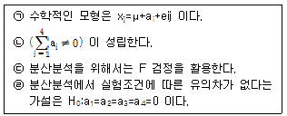
- ㉠, ㉢, ㉣
- ㉢, ㉣
- ㉠, ㉡, ㉢
- ㉠, ㉡, ㉢, ㉣
(정답률: 65%)
3. 일반적으로 변량요인들에 대한 실험계획으로 많이 사용되며, 다음과 같은 데이터의 구조식을 갖는 실험계획법은? (단, I=1, 2, ···, l, j=1, 2, ···, m, k=1, 2, ···, n, p=1, 2, ···, r 이다.)
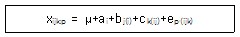
- 단일분할법
- 지분실험법
- 이단분할법
- 삼단분할법
(정답률: 75%)
4. L27(313)형 직교배열표에서 C요인을 기본표시abc로, B요인을 abc2으로 배치했을 때, B×C의 기본표시는?
- a, ac
- ac, bc
- c, ab
- bc2, ab2c
(정답률: 71%)
5. 23형 요인배치실험을 교락법을 사용하여 다음과 같이 2개의 블록으로 나누어 실험하려고 할 때, 블록과 교락되어 있는 교호작용은?
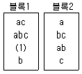
- A×B
- A×C
- B×C
- A×B×C
(정답률: 66%)
6. 반복이 있는 2요인 실험의 분산분석에서 교호작용이 유의하지 않아 오차항에 풀링했을 경우, 요인 B의 F0(검정통계량)은 약 얼마인가?
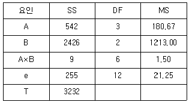
- 53.32
- 57.10
- 82.70
- 84.⑤
(정답률: 64%)
7. 반복이 없는 2요인 실험에서 요인 A의 제곱합 SA의 기대치를 구하는 식은? (단, A와 B는 모두 모수, A의 수준수는 l, B의 수준수는 m이다.)
- σ2e+mσ2A
- (l-1)σ2e+m(l-1)σ2A
- (m-1)σ2e+(m-1)σ2A
- m(l-1)σ2e+l(m-1)σ2A
(정답률: 40%)
8. 그림에서 회귀 제곱합(SR)을 구할 때 사용되는 것은?
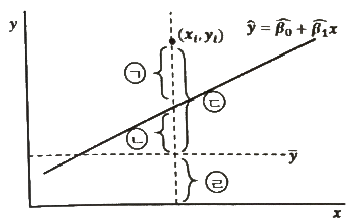
- ㉠
- ㉡
- ㉢
- ㉣
(정답률: 59%)
9. 1요인 실험에서 완전 랜덤화 모형과 2요인 실험의 난괴법에 관한 설명으로 틀린 것은?
- 난괴법에서 변량요인 B에 대해 모평균을 추정하는 것은 의미가 없다.
- 난괴법은 A요인이 모수요인, B는 변량요인이며 반복이 없는 경우를 지칭한다.
- k개의 처리를 r회 반복 실험하는 경우에 오차항의 자유도는 1요인실험이 난괴법보다 r-1이 크다.
- 난괴법에서 변량요인 B를 실험일 또는 실험장소 등인 경우로 선택할 때 집단요인이 된다.
(정답률: 41%)
10. 적합품을 1, 부적합품을 0으로 한 실험을 각각 5번씩 반복 측정한 결과는 다음과 같을 떄, 전체 제곱합 ST를 구하면 약 얼마인가?
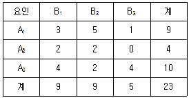
- 9.71
- 11.24
- 15.86
- 22.59
(정답률: 57%)
11. 4개의 처리를 각각 n회씩 반복하여 평균치
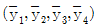
를 얻었을 때, 대비(contrast)가 될수 없는 것은?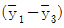
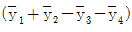
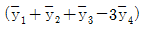
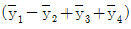
(정답률: 68%)
12. 모수요인으로 반복 없는 3요인 실험의 분산분석 결과를 풀링하여 다시 정리한 값이 다음과 같을 때, 설명 중 틀린 것은?
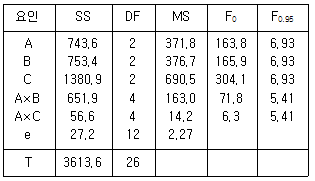
- 풀링 전 오차항의 자유도는 8이었다.
- 교호작용 B×C 는 오차항에 풀링되었다.
- 현재의 자유도로 보아 결측치가 하나 있는 것으로 나타났다.
- 최적해의 점추정치는
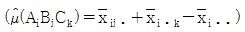
이다.
(정답률: 59%)
13. 변량요인 A에 대한 설명으로 틀린 것은? (단, A요인의 수준수는 l이고, Ai수준이 주는 효과는 ai이다.)
- ai들의 합은 일반적으로 0이 아니다.
- ai는 랜덤으로 변하는 확률변수이다.
- ai들간의 산포의 측도로서
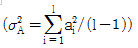
을 사용한다. - 수준이 기술적인 의미를 갖지 못하며 수준의 선택이 랜덤하게 이루어진다.
(정답률: 65%)
14. 다음은 L8(27)형 직교배열표의 일부분이다. 1열에 배치된 A의 효과는?
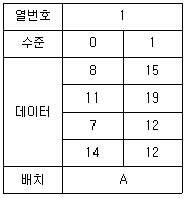
- 2.5
- 3.5
- 4.5
- 5.5
(정답률: 62%)
15. 반복없는 22형 요인실험에서 주효과 A를 구하는 식은?
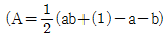
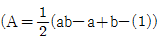
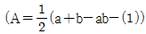
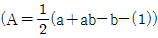
(정답률: 65%)
16. 동일한 기계에서 생산되는 제품을 5개 추출하여 그 중요 특성치를 측정하였더니 다음과 같았다. 이 특성치가 망소특성인 경우에 SN(signal to noise) 비는 약 얼마인가?
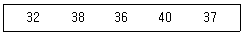
- -31.29dB
- -21.29dB
- 21.29dB
- 31.29dB
(정답률: 59%)
17. 어떤 화학반응 실험에서 농도를 4수준으로 반복수가 일정하지 않은 실험을 하여 다음 표와 같은 결과를 얻었다. 분산분석 결과 Se=2508.8 이었을 때, μ(A3)의 95% 신뢰구간을 추정하면 약 얼마인가? (단, t0.95(15)=1.753, t0.975(15)=2.131 이다.)
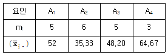
- 37.938≤μ(A3)≤58.472
- 38.061≤μ(A3)≤58.339
- 35.555≤μ(A3)≤60.845
- 35.875≤μ(A3)≤60.525
(정답률: 54%)
18. 23형 실험계획에서 A×B×C를 정의대비(defining contrast)로 정해 1/2 일부실시법을 행했을 때, 요인 A와 별명(alias) 관계가 되는 요인은?
- B
- A×B
- A×C
- B×C
(정답률: 72%)
19. 기술적으로 의미가 있는 수준을 가지고 있으나 실험 후 최적수준을 선택하여 해석하는 것이 무의미하며, 제어요인과의 교호작용의 해석을 목적으로 채택하는 요인은?
- 표시요인
- 집단요인
- 블록요인
- 오차요인
(정답률: 45%)
20. 1차 단위 요인 A(3수준), 2차 단위 요인 B(4수준), 블록반복 r=2의 1차 단위가 1요인 실험인 단일 분할법에 의하여 실험을 실시할 경우, 1차 단위 오차의 자유도는?
- 2
- 6
- 8
- 9
(정답률: 45%)
2과목: 통계적품질관리
21. 두 개의 모집단 N(μ1, σ12), N(μ2, σ22)에서 H0:μ1=μ2를 검정하기 위하여 n1=10개, n2=9개의 샘플을 구하여 표본평균과 분산으로 각각
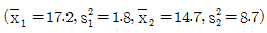
을 얻었다. 유의수준 α=0.⑤ 로 하여 등분산성의 여부를 검토하려고 할 때, 틀린 것은? (단, F0.975(9, 8)=4.36, F0.025(9, 8)=0.2439 이다.)- H0 기각한다.
- 검정통계량 F0=0.357 이다.
- 등분산성은 성립하지 않는다.
- H0:σ12=σ22, H1:σ12≠σ22 이다.
(정답률: 58%)
22. 시료 부적합품률(
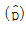
)로부터 모부적합품률에 대해 정규분포 근사법을 이용하여 95%의 신뢰율로 신뢰한계를 구할 때 사용하여야 할 식으로 맞는 것은? (단, n은 샘플의 크기이다.)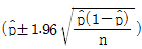
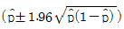
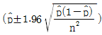
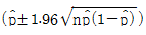
(정답률: 66%)
23. p관리도에 관한 설명으로 틀린 것은?
- 이항분포를 따르는 계수치 데이터에 적용된다.
- 부분군의 크기는 가급적
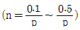
를 만족하도록 설정한다. - 부분군의 크기가 일정할 때는 np 관리도를 활용하는 것이 작성 및 활용상 용이하다.
- 일반적으로 부적합품률에는 많은 특성이 하나의 관리도 속에 포함되므로
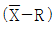
관리도 보다 해석이 어려울 수 있다.
(정답률: 50%)
24. 관리도에 관한 설명으로 틀린 것은?
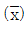
관리도의 검출략은 x 관리도보다 좋다.- 관리한계를 2σ한계로 좁히면 제1종 오류가 감소한다.
- c 관리도는 각 부분군에 대한 샘플의 크기가 반드시 일정해야 한다.
- u 관리도에서 부분군의 샘플의 수가 다르면 관리한계는 요철형이 된다.
(정답률: 60%)
25.  에서
에서
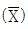
의 변동을 σx2, 개개 데이터의 변동을 σH2, 군간변동을 σb2, 군내변동을 σw2 이라고 하면 완전한 관리상태일 때, 이들 간의 관계식으로 맞는 것은?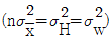
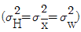
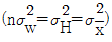
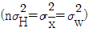
(정답률: 55%)
26. 계수형 샘플링검사 절차-제2부:고립로트한계품질(LQ) 지표형 샘플링검사 방식(KS Q ISO 2853-2:2014)에 관한 설명으로 틀린 것은?
- 절차 A의 샘플링검사 방식은 로트크기 및 한계품질(LQ)로부터 구해진다.
- 절차 B의 샘플링검사 방식은 로트크기, 한계품질(LQ) 및 검수수준에서 구할 수 있다.
- 절차 A는 합격판정개수가 0인 샘플링 방식을 포함하고 샘플크기는 초기하분포에 기초하고 있다.
- 절차 B는 합격판정개수가 0인 샘플링 방식을 포하하며 AQL 지표형 샘플링 검사와는 독립적으로 구성되어 있다.
(정답률: 32%)
27. 어떤 회귀식에 대한 분산분석표가 다음과 같을 때, 회귀관계에 대한 설명으로 맞는 것은? (단, F0.95(2, 7)=4.75, F0.99(2, 7)=9.55 이다.)
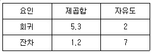
- 해당 자료로는 판단할 수 없다.
- 유의수준 5%로 회귀관계는 유의하지 않다.
- 유의수준 1%로 회귀관계는 유의하다.
- 유의수준 5%로 회귀관계는 유의하나, 1%로는 유의하지 않다.
(정답률: 49%)
28. 메디안 (
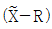
) 관리도에서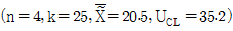
이면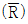
는 약 얼마인가? (단, n=4 일 때 d2=2.⑤9, A4=0.796, m3=1.092 이다.)- 9.46
- 11.23
- 18.47
- 26.80
(정답률: 45%)
29. 크기가 1500개인 어떤 로트에 대해서 전수검사 시 개당 검사비는 10원이고, 무검사로 인하여 부적합품이 혼입됨으로써 발생하는 손실은 개당 200원이다. 이 때 임계부적합품률(Pb)의 값과, 로트의 부적합률을 3%라고 할 떄, 이익이 되는 검사방법은?
- Pb=1.3%, 무검사
- Pb=1.3%, 전수검사
- Pb=5%, 무검사
- Pb=5%, 전수검사
(정답률: 48%)
30. 특성변화에 주기성이 있어 그 주기성을 피하기 위해 고안한 샘플링 방법은?
- 계통 샘플링
- 네이만 샘플링
- 층별 샘플링
- 지그재그 샘플링
(정답률: 61%)
31. 공정에 이상이 있을 경우 관리도에서 점이 관리한계선 밖으로 나갈 확률은 1-β에 해당된다. 1-β에 해당하는 용어로 맞는 것은?
- 오차
- 이상원인
- 검출력
- 제1종 오류
(정답률: 66%)
32. Y 제품의 품질 특성에 대해 8개의 시료를 측정한 결과 3, 4, 2, 5, 1, 4, 3, 2로 나타났고, 이 데이터를 활용하여 σ2에 대한 95% 신뢰구간을 구했더니 0.75≤σ2≤7.10이었다. 귀무가설 H0:σ2=9, 대립가설 H1:σ2≠9에 대하여 유의수준 α=0.⑤로 검정한 결과로 맞는 것은?
- H0를 기각한다.
- H0를 채택한다.
- H0를 보류한다.
- H0를 기각해도 되고 채택해도 된다.
(정답률: 58%)
33. 어떤 금속판 두께의 하한 규격치가 2.3mm 이상이라고 규정되었을 때 합격판정치는? (단, n=10, k=1.81, σ=0.2mm, α=0.⑤, β=0.10 이다.)
- 1.938
- 2.185
- 2.415
- 2.662
(정답률: 32%)
34. 모표준편차를 모르고 있을 때 모평균의 양측 신뢰구간 추정에 사용되는 식으로 맞는 것은?
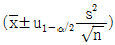
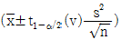
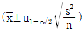
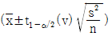
(정답률: 47%)
35. 적합도 검정에 대한 설명으로 맞는 것은?
- 계량형 자료에만 쓴다.
- 검정통계량은 카이제곱분포를 따른다.
- 기대도수는 대립가설에 맞추어 구한다.
- 이론치 또는 기대치 nPi≤5 일 때 근사의 정도가 좋아진다.
(정답률: 55%)
36. 로트의 부적합품률(P)은 10%, 로트의 크기(N)는 1000, 시료의 크기(n)를 20으로 할 때, 시료 20개 중 부적합품이 2개일 확률은?
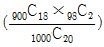
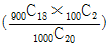
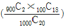
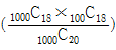
(정답률: 58%)
37. M 제조공정에서 제조되는 부품의 특성치는 μ=40.10mm, σ=0.08mm 인 정규분포를 하고 있고, 이 공정에서 25개를 샘플링하여 특성치를 측정한 결과
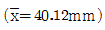
일 때, 유의수준 5%에서 이 공정의 모평균에 차이가 있는지를 검정한 결과는?- 통계량이 1.96 보다 크므로 H0 기각한다.
- 통계량이 1.96 보다 크므로 H0를 기각할 수 없다.
- 통계량이 1.96 보다 작고 -1.96보다 크므로 H0 기각한다.
- 통계량이 1.96 보다 작고 -1.96보다 크므로 H0를 기각할 수 없다.
(정답률: 42%)
38. 크기 n인 표본 k 조에서 구한 범위의 평균을
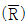
라 하고, s를 자유도 v인 표준편차라 할 때, 기대치는? (문제오류로 인하여 실제 시험에서는 1, 2, 3, 4번이 모두 정답처리 되었습니다. 여기서는 1번을 누르면 정답 처리됩니다.)
기대치는? (문제오류로 인하여 실제 시험에서는 1, 2, 3, 4번이 모두 정답처리 되었습니다. 여기서는 1번을 누르면 정답 처리됩니다.)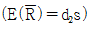
(정답률: 61%)
39. 계수형 축차 샘플링검사 방식(KS Q ISO 8422:2006)에서 생산자 위험 품질(QPR)에 관한 설명으로 맞는 것은?
- 될 수 있으면 합격으로 하고 싶은 로트의 부적합품률의 상한
- 될 수 있으면 합격으로 하고 싶은 로트의 부적합품률의 하한
- 될 수 있으면 불합격으로 하고 싶은 로트의 부적합품률의 상한
- 될 수 있으면 불합격으로 하고 싶은 로트의 부적합품률의 하한
(정답률: 43%)
40. 로트 크기는 2000, 시료의 개수는 200, 합격판정개수가 1인 계수치 샘플링검사를 실시할 때, 부적합품률 1%인 로트의 합격가능성은 약 얼마인가? (단, 푸아송 분포로 근사하여 계산한다.)
- 13.53%
- 38.90%
- 40.60%
- 54.00%
(정답률: 37%)
3과목: 생산시스템
41. 생산목표를 달성할 수 있도록 적절한 품질의 제품이나 서비스를 적시에 적량을 적가로 생산할 수 있도록 생산 과정을 이룩하고 생산활동을 관리 및 조정하는 활동을 무엇이라 하는가?
- 공정관리
- 생산관리
- 생산계획
- 생산전략
(정답률: 57%)
42. 라인밸런스 효율에 관한 내용으로 틀린 것은?
- 각 작업장의 표준작업시간이 균형을 이루는 정도를 의미한다.
- 사이클 타임을 길게 하면 생산속도가 빨라져 생산율이 높아진다.
- 사이클 타임과 작업장의 수를 얼마로 하느냐에 따라서 결정된다.
- 생산작업에 투입되는 총시간에 대한 실제작업시간의 비율로 표현된다.
(정답률: 62%)
43. 동작경제의 원칙 중 작업장 배치(Arrangement ofWork place)에 관한 원칙에 해당하는 것은?
- 모든 공구나 재료는 지정된 위치에 있도록 한다.
- 양손 동작은 동시에 시작하고 동시에 완료한다.
- 타자를 칠 때와 같이 각 손가락의 부하를 고려한다.
- 가능하다면 쉽고도 자연스러운 리듬이 작업동작에 생기도록 작업을 배치한다.
(정답률: 45%)
44. MRP 시스템의 특징이 아닌 것은?
- 주문의 발주계획 생성
- 제품구조를 반영한 계획 수립
- 생산통제와 재고관리 기능의 분리
- 주문에 대한 독촉과 지연정보 제공
(정답률: 38%)
45. 제품 A를 자체 생산할 경우 연간 고정비는 100000원, 개당 변동비는 50원, 판매가격은 150원이다. 손익분기점의 수량은?
- 800개
- 900개
- 1000개
- 1100개
(정답률: 52%)
46. 납기일 준수가 중요한 경우에 많이 사용되는 작업배정규칙은 긴급률(critical ratio)을 이용하는 것이다. 긴급률에 대한 설명으로 맞는 것은?
- 납기까지의 여유시간 대 잔여 작업 수
- 납기까지의 남은 잔여작업수 대 필요한 소요시간
- 작업을 수행하는 데 필요한 소요시간 대 잔여 작업 수
- 작업을 수행하는 데 필요한 소요시간 대 납기까지의 남은 시간
(정답률: 45%)
47. 간트 차트에서 “「”기호가 의마하는 것은?
- 활동개시
- 비활동기간
- 활동종료
- 예상활동시간
(정답률: 55%)
48. M 작업자의 작업소요시간을 관측한 결과 평균 0.25분이었다. 레이팅치가 80%라면, 이 작업의 정미시간은 얼마인가?
- 0.20분
- 0.25분
- 0.30분
- 0.40분
(정답률: 58%)
49. 설비종합효율을 관리함에 있어 품질을 안정적으로 유지하기 위해 초기제품을 검수하고 리셋(reset)하는 작업에 해당되는 로스는?
- 속도저하로스
- 고장로스
- 일시정지로스
- 초기·수율로스
(정답률: 64%)
50. 다음의 내용은 자주보전 활동 7스텝 중 몇 스텝에 해당하는가?
- 4스텝 : 총점검
- 5스텝 : 자주점검
- 6스텝 : 정리정돈
- 7스텝 : 자주관리의 철저(생활화)
(정답률: 37%)
51. 공정 도시 기호(KS A 3002:2014)에서 기본 도시 기호 중 저장에 해당하는 것은?
(정답률: 43%)
52. ERP의 특징으로 맞는 것은?
- 보안이 중요하므로 Close client server system을 채택하고 있다.
- 단위별 응용프로그램들이 서로 통합 연결된 관계로 중복업무가 많아 프로그램이 비효율적이다.
- 생산, 마케팅, 재무 기능이 통합된 프로그램으로 보완이 중요한 인사와는 연결하지 않는다.
- EDI, CALS, 인터넷 등으로 기업간 연결시스템을 확립하여 기업간 자원활용의 최적화를 추구한다.
(정답률: 45%)
53. JIT 시스템에서 생산준비기간의 단축에 관한 설명으로 틀린 것은?
- 기능적 공구의 채택으로 작업시간을 단축시킨다.
- 내적 작업준비를 가급적 지양하고 가능한 외적 작업준비를 바꾼다.
- 외적 작업준비를 기계가동을 중지하여 작업준비를 하는 경우이다.
- 조정위치를 정확하게 설정하여 조정작업시간을 단축시킨다.
(정답률: 41%)
54. 7월 판매 실적치가 20000개, 판매 예측치가 22000개, 8월 판매 실적치가 25000개 일 때, 7월과 8월 2개월 실적을 고려하여 지수평활법으로 9월의 판매 예측량을 구하면 얼마인가? (단, α=0.2 이다.)
- 20080개
- 21280개
- 22280개
- 32280개
(정답률: 52%)
55. M. L. Fisher가 주장한 공급사슬의 유형으로 수요의 불확실성에 대비하여 재고의 크기와 생산능력의 위치를 설정함으로써, 시장수요에 민감하게 설계하는 것을 뜻하는 공급사슬의 명칭은 무엇인가?
- 민첩형 공급사슬(agile supply chain)
- 효율적 공급사슬(efficient supply chain)
- 반응적 공급사슬(responsive supply chain)
- 위험방지형 공급사슬(risk-hedging supply chain)
(정답률: 48%)
56. 장기계획에 의해 생산능력이 고정된 경우, 중기적인 수요의 변동에 대응하기 위해 고용수준, 생산수준, 재고수준 등을 결정하는 계획은?
- 공수계획
- 자재소요계획
- 공정계획
- 총괄생산계획
(정답률: 57%)
57. 구매방법 중 기업이 현재 자재의 가격은 낮지만 앞으로는 가격이 상승할 것으로 예상되어 구매를 하는 방법은?
- 충동구매
- 시장구매
- 일괄구매
- 분산구매
(정답률: 56%)
58. 스톱워치에 의한 시간관측방법 중 계속법에 관한 설명으로 틀린 것은?
- 불규칙하거나 비반복적인 작업측정에 적합하다.
- 요소작업의 사이클타임이 짧은 경우에 적용이 용이하다.
- 매 작업요소가 끝날 때마다 바늘을 멈추고 원점으로 되돌릴 때 발생하는 측정오차가 거의 없다.
- 첫 번째 요소작업이 시작되는 순간에 시계를 작동시켜 관측이 끝날 때까지 시계를 멈추지 않고 요소작업의 종점마다 시계바늘을 읽어 관측용지에 기입하는 방법으로 측정한다.
(정답률: 36%)
59. 자재관리에서 자재 분류의 4가지 원칙 중 창고부문, 생산부문 등 기업의 모든 부문에 적용되기 때문에 가능한 불편하지 않고 기억하기 쉽도록 분류하는 원칙은?
- 점진성
- 용이성
- 포괄성
- 상호배제성
(정답률: 55%)
60. 기능식 공정이 비교적 복잡하게 얽혀 있는 공정흐름을 가지고 있는 반면 기계가 유사부품군에 필요한 모든 작업을 처리할 수 있도록 배치되어 있어 모든 부품들이 동일 경로를 따르게 되어 있는 생산시스템은?
- JIT 생산시스템
- MRP 생산시스템
- 모듈러(modular)생산시스템
- 셀룰러(cellular)생산시스템
(정답률: 39%)
4과목: 신뢰성관리
61. 시스템 수명곡선인 욕조곡선의 초기고장기간에 발생하는 고장의 원인에 해당되지 않는 것은?
- 불충분한 정비
- 조립상의 과오
- 빈약한 제조기술
- 표준 이하의 재료를 사용
(정답률: 56%)
62. 다음과 같은 블록도를 갖는 시스템의 FT 도를 작성한 것은?
(정답률: 54%)
63. 내용수명(useful life of longevity)이란?
- 우발고장의 기간
- 마모고장의 기간
- 초기고장의 기간
- 규정된 고장률 이하의 기간
(정답률: 45%)
64. 부품의 단가는 400원이고, 시험하는 전체 부품의 시간당 시험비는 60원이다. 총시험기간(T)를 200시간으로 수명시험을 할 때, 가장 경제적인 것은?
- 샘플 5개를 40시간 시험한다.
- 샘플 10개를 20시간 시험한다.
- 샘플 20개를 10시간 시험한다.
- 샘플 40개를 5시간 시험한다.
(정답률: 57%)
65. 신뢰성을 개선하기 위해서 계획적으로 부하를 정격치에서 경감하는 것은?
- 총생산보전(TPM)
- 디레이팅(Derating)
- 디버깅(Debugging)
- 리던던시(Redundancy)
(정답률: 49%)
66. 수명시험 데이터를 분석하는 확률지 분석법에서 수명시험 데이터에 관측 중단된 데이터가 있을 때 확률지 타점법에 관한 설명으로 맞는 것은?
- 관측중단여부에 관계없이 타점한다.
- 관측중단 데이터만 타점하고 고장시간 데이터는 타점하지 않는다.
- 관측중단 데이터는 버리고 고장시간 데이터만 분석하여 타점한다.
- 관측중단 데이터는 누적분포함수(F(t)) 계산에만 이용하고 타점은 고장시간만 한다.
(정답률: 41%)
67. 지수분포의 수명을 갖는 8대의 튜너(tuner)에 대하여 회전수명시험을 실시한 결과 고장이 발생한 사이클 수는 다음과 같았다. 95%의 신뢰수준으로 평균수명에 대한 구간을 추정하면 약 얼마인가? (단, X20.025(16)=6.91, X20.975(16)=28.85 이다.)
- MTBFL=29362, MTBFU=89278
- MTBFL=37246, MTBFU=139327
- MTBFL=46403, MTBFU=193737
- MTBFL=50726, MTBFU=120829
(정답률: 30%)
68. 샘플 100개에 대하여 수명시험을 하고 10시간 간격으로 고장개수를 조사하였더니 20시간에서 누적고장수 10개, 30시간에서의 누적고장수 20개, 40시간에서의 누적고장수 50개로 나타났다. 시점 t=30 시간에서의 고장확률밀도함수는 얼마인가?
- 0.03/시간
- 0.0375/시간
- 0.3/시간
- 0.375/시간
(정답률: 33%)
69. 다음과 같이 전기회로를 3개의 부품으로 병렬리던던시 설계를 했을 경우, 전기회로 전체의 신뢰도는 약 얼마인가? (단, 부품 1의 신뢰도는 0.9, 부품 2의 신뢰도는 0.9, 부품 3의 신뢰도는 0.8 이다.)
- 0.5184
- 0.6480
- 0.7128
- 0.7776
(정답률: 55%)
70. 고장상태를 형식 또는 형태로 분류한 것은?
- 고장
- 고장 모드
- 고장 메커니즘
- 고장 원인
(정답률: 43%)
71. 신뢰성 시험의 설명으로 맞는 것은?
- r번 고장이 발생한 경우 평균수명의 양쪽 신뢰구간은 자유도 r인 X2 분포를 따른다.
- 고장이 없을 때는 정수중단의 수명 신뢰하한에서 고장회수 r을 0으로 놓으면 된다
- 단 한번 고장의 정수중단과 고장이 전혀 없는 정시중단의 수명 양쪽구간 신뢰하한은 다르다.
- 고장이 하나도 없을 때는 지수분포를 푸아송분포로 해서 수명의 하한 값을 구하면 된다.
(정답률: 32%)
72. 다음 기호를 사용하여 신뢰성의 척도를 구하는 방법으로 틀린 것은?
- R(t)=n(t)/N
- F(t)=1-R(t)
- λ(t)=R(t)/f(t)
- f(t)=-dR(t)/dt
(정답률: 48%)
73. 40개의 시험제품 중 30개가 고장이 발생하였을 때, 평균순위법을 이용하여 신뢰도 R(t)를 구하면 약 얼마인가?
- 0.2683
- 0.2878
- 0.3279
- 0.3474
(정답률: 46%)
74. 고장률이 일정하며 0.0⑤/시간으로서 동일한 부품 10개가 동시에 모두 작동해야만 기능을 발휘하는 시스템의 평균수명은?
- 2시간
- 20시간
- 200시간
- 2000시간
(정답률: 42%)
75. 예정된 시험시간 내에 샘플이 모두 고장 나지 않아 시험조건을 사용조건보다 악화시켜 고장발생시간을 단축하는 시험은?
- 가속수명시험
- 정상수명시험
- 중도중단시험
- 정시단축시험
(정답률: 62%)
76. 예방보전과 사후보전을 모두 실시할 때 보전성의 척도는?
- 수리율
- 보전도 함수
- 평균정지시간(MDT)
- 평균수리시간(MTTR)
(정답률: 32%)
77. 신뢰도가 0.9로 동일한 부품 2개를 결합하여 만든 시스템이 2개 부품 중 어느 하나만 작동하면 기능을 발휘한다면 할 때, 이 시스템의 신뢰도는?
- 0.19
- 0.81
- 0.90
- 0.99
(정답률: 50%)
78. 표본의 크기가 n일 때 시간 t를 지정하여 그 시간까지 고장수를 r로 한다면, 수명 t에 대한 신뢰도 R(t)의 추정식은?
- R(t)=r/n
- R(t)=n/r
(정답률: 56%)
79. 어떤 시스템의 고장률이 시간당 0.045, 수리율은 시간당 0.85일 때, 이 시스템의 가용도는 약 얼마인가?
- 0.⑤03
- 0.5037
- 0.9249
- 0.9497
(정답률: 49%)
80. 어떤 재료에 가해지는 부하의 평균은 20kg/mm2이고, 표준편차는 3kg/mm2이다. 그리고 사용재료의 강도는 평균이 35kg/mm2이고, 표준편차가 4kg/mm2이다. 이 재료의 신뢰도는 약 얼마인가? (단, 다음의 정규분포표를 이용하여 구한다.)
- 95.45%
- 97.73%
- 99.73%
- 99.87%
(정답률: 52%)
5과목: 품질경영
81. 2종류의 데이터의 관계를 그림으로 나타낸 것으로 개선하여야 할 특성과 그 요인의 관계를 파악하는데 주로 사용되는 것은?
- 산점도
- 특성요인도
- 체크시트
- 히스토그램
(정답률: 33%)
82. 다수의 측정자가 동일한 측정기를 이용하여 동일한 제품을 여러 번 측정하였을 때 파생되는 개인 간의 측정변동을 의미하는 것은?
- 재현성
- 정밀도
- 안정성
- 직선성
(정답률: 54%)
83. 품질보증의 의미를 설명한 것 중 틀린 것은?
- 소비자의 요구품질이 갖추어져 있다는 것을 보증하기 위해 생산자가 행하는 체계적 활동
- 품질기능이 적절하게 행해지고 있다는 확신을 주기 위해 필요한 증거에 관계되는 활동
- 소비자의 요구에 맞는 품질의 제품과 서비스를 경제적으로 생산하고 통제하는 활동
- 제품 또는 서비스가 소정의 품질요구를 갖추고 있다는 신뢰감을 주기 위해 필요한 계획적, 체계적 활동
(정답률: 50%)
84. 6σ품질수준에서 예상되는 이상적인 공정능력지수(Cp) 값은?
- 1
- 2
- 3
- 4
(정답률: 48%)
85. 리콜(Recall)조치에 따른 비용은 어떤 품질코스트에 포함되는 비용인가?
- 예방코스트
- 실패코스트
- 평가코스트
- 감사코스트
(정답률: 59%)
86. 제조물 책임법상 결함의 종류에 해당하지 않는 것은?
- 설계상의 결함
- 제조상의 결함
- 표시상의 결함
- 서비스상의 결함
(정답률: 56%)
87. 품질 모티베이션 활동인 ZD혁신활동의 내용에 해당되지 않는 것은?
- ZD 프로그램의 요체는 MPS(주일정계획)의 실행에 있다.
- 1960년대 미국의 마틴사에서 원가절감으로 전개된 운동이다.
- 품질향상에 대한 종업원의 동기부여 프로그램에 해당된다.
- 무결점혁신활동 또는 완전무결 혁신활동이라 불리고 있다.
(정답률: 36%)
88. 산업규격은 적용되는 지역과 범위에 따라 분류할 수 있는데 이에 해당된다고 볼 수 없는 것은?
- 사내규격
- 전달규격
- 국가규격
- 국제규격
(정답률: 52%)
89. TQM의 전략목표로 가장 적절한 것은?
- 고객의 기대와 요구를 만족시키는 것
- 품질이 소정 수준에 있음에 보증하는 것
- 표준을 설정하고 이것에 도달하기 위해 사용되는 모든 수단의 체계
- 최고 경영자에 의해 공식적으로 표명된 품질에 관한 조직의 전반적 의도
(정답률: 36%)
90. 품질시스템에서 해당 부서와 독립된 인원에 의해 수행되어야 할 업무는?
- 서비스
- 품질보증
- 품질심사
- 제품책임
(정답률: 50%)
91. 활동기준원가(activity based cost)의 적용에 따른 효과가 아닌 것은?
- 관리회계시스템의 기반을 구축할 수 있다.
- 정확한 원가 및 이익정보 제공이 가능하다.
- 성과평가를 위한 인프라 및 전략적 정보를 제공한다.
- 품질프로그램의 중요성에 대한 우선순위 결정이 가능하다.
(정답률: 33%)
92. 조직을 계획하는데 이용되는 3가지 도구 중 해당 직종의 책임, 권한, 수행업무 및 타 직무와의 관계 등을 나타낸 것은?
- 조직표
- 관리표준서
- 책임분장표
- 직무기술서
(정답률: 48%)
93. 타인의 의견을 바탕으로 자유롭게 발상하고 발언한다. 발언에 미숙한 사람도 참가하여 타인의 의견을 같은 수준에서 받아들여 아이디어를 내는 방법은?
- 카이젠
- 브레인스토밍
- 특성요인도
- 희망점열거법
(정답률: 58%)
94. 허용차와 공차에 대한 설명으로 틀린 것은?
- 최대허용치수와 최소허용치수와의 차이를 공차라고 한다.
- 허용한계치수에서 기준지수를 뺀 값을 실치수라고 한다.
- 허용차는 규정된 기준치와 규정된 한계치와의 차이다.
- 허용차의 표시방법은 양쪽이 같은 수치를 가질 때에는 ±를 붙여서 기재한다.
(정답률: 51%)
95. 사내표준화의 운용단계에서 규격의 준수와 실천을 위한 설명으로 틀린 것은?
- 사내규격은 조직의 정보공유 차원에서 다루어지고 실천한다.
- 리더는 해당자에게 철저히 훈련하여 표준이 준수될 수 있도록 한다.
- 사내표준화가 지켜지지 않으면 그 이유가 있으므로 근본 원인을 제거한다.
- 사내규격은 회사의 기본 시스템을 언급하고 있기 때문에 형식적으로 취급한다.
(정답률: 51%)
96. 고객만족도 조사의 3원칙이 아닌 것은?
- 계속성의 원칙
- 정량성의 원칙
- 신속성의 원칙
- 정확성의 원칙
(정답률: 35%)
97. 수치 맺음법에 따라 계산한 것으로 틀린 것은?
- 2.2962를 유효숫자 3 자리로 맺으면 2.30 이다.
- 3.2967을 소수점 이하 3 자리로 맺으면 3.297 이다.
- 5.346을 유효숫자 2 자리로 맺을 때 첫 단계로 5.35, 둘째 단계로 5.4 가 되어 결국 5.4 이다.
- 0.0745(소수점 이하 4 자리가 반드시 5 인지 버려진 것인지 올려진 것인가를 모른다)를 소수점 이하 3 자리로 맺으면 0.074 이다.
(정답률: 43%)
98. 고객이 요구하는 참된 품질을 언어표현에 의해 체계화하여 이것과 품질특성과의 관련을 짓고, 고객의 요구를 대용특성으로 변화시키며 품질설계를 실행해 나가는 품질표를 사용하는 기법은?
- QFD
- 친화도
- FMEA/FTA
- 매트릭스 데이터 해석
(정답률: 43%)
99. 품질경영시스템-기본사항과 용어(KS Q ISO 9000:2015)에서 정의된 내용 중 계획된 활동이 실현되어 계획된 결과가 달성되는 정도를 의미하는 용어는?
- 효율성
- 적절성
- 효과성
- 적합성
(정답률: 38%)
100. Y 제품의 치수가공을 관리하기 위해서 관리도를 이용하고자 한다. 관리도의 작성을 위해 n=5인 부분군 25개를 추출하여 결과를 정리하니 이었다. 주어진 치수의 규격은 26.0±1.0mm 라고 하면, 공정능력지수 Cp는 약 얼마인가? (단, n=5일 때, A2=0.58, D4=2.11, d2=2.326 이다.)
- 0.73
- 0.99
- 1.33
- 1.47
(정답률: 33%)